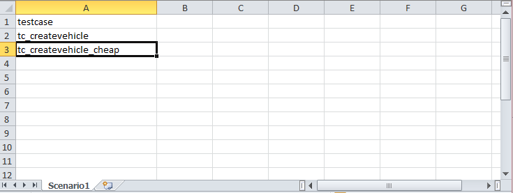
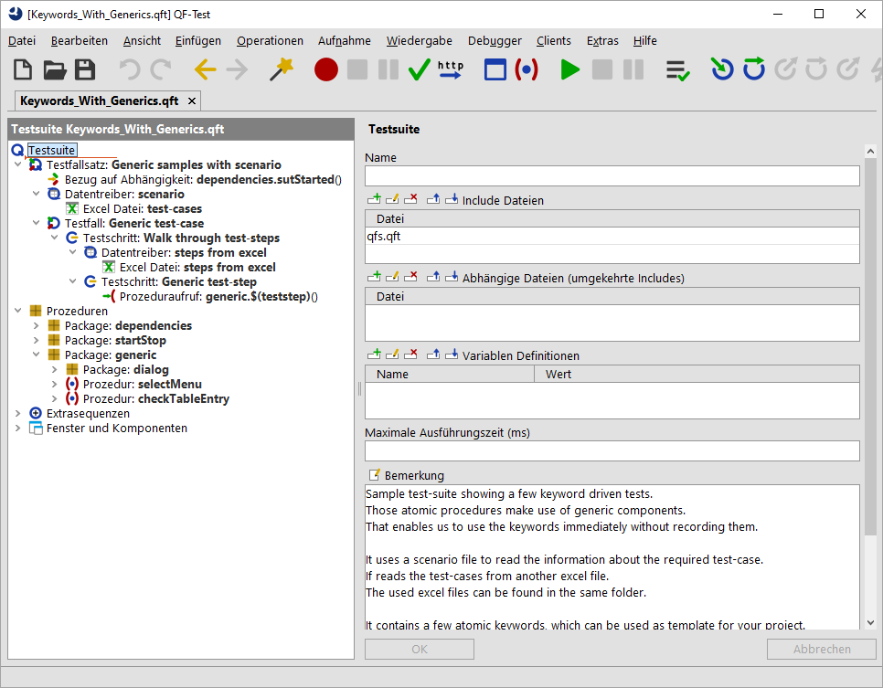

| Version 6.0.3 |
Neben der Testfallbeschreibung, ist es natürlich auch möglich das gesamte Testszenario in einer Exceldatei oder in Ihrem Testmanagementtool zu beschreiben.
In diesem Abschnitt wird der Einfachheit halber wieder eine Exceldatei genutzt. Das dazugehörige Beispiel finden Sie unter
qftest-6.0.3/demo/keywords/generic_with_scenario/
Keywords_With_Generics.qft.
Das dazugehörige Szenario liegt unter qftest-6.0.3/demo/keywords/generic_with_scenario/
scenario.xlsx.
Die verwendeten Testfälle werden hier in einer separaten Exceldatei beschrieben, siehe
qftest-6.0.3/demo/keywords/generic_with_scenario/
keywords-generic-testcases.xlsx.
Bitte achten Sie darauf, dass Sie den Ordner in ein projektspezifisches Verzeichnis kopieren und diese dort modifizieren.
Das mitgelieferte Szenario besteht aus zwei Testfällen, die mit dem generischen Prozedurenansatz beschrieben sind (Abschnitt 27.3). Natürlich können alle anderen Ansätze auch entsprechend konfiguriert werden.
Schauen wir uns zuerst die Exceldatei an.
|
|  | ||
|
| Abbildung 27.8: Exceldatei als Szenariodatei | ||
Im Tabellenblatt "Scenario" ist in der ersten Spalte der Wert "testcase" aufgeführt, welcher später wieder als Variable verwendet werden wird.
Jede weitere Zeile steht für einen Testfall.
Diese Testfälle entsprechen auch den Namen der Tabellenblätter in der Exceldatei keywords-generic-testcases.xlsx.
In diesen Tabellenblättern "tc_createvehicle" und "tc_createvehicle_cheap" finden wir auch die entsprechenden Testfallbeschreibungen.
Die dazugehörige Testsuite hat nun folgenden Aufbau:
|
|  | ||
|
| Abbildung 27.9: Testsuite Szenariodateien | ||
|
|
|
||||||||||||||||||||||||
|
| Tabelle 27.6: Aufbau von Keywords_With_Generics.qft | ||||||||||||||||||||||||
| Letzte Änderung: 6.9.2022 Copyright © 1999-2022 Quality First Software GmbH |